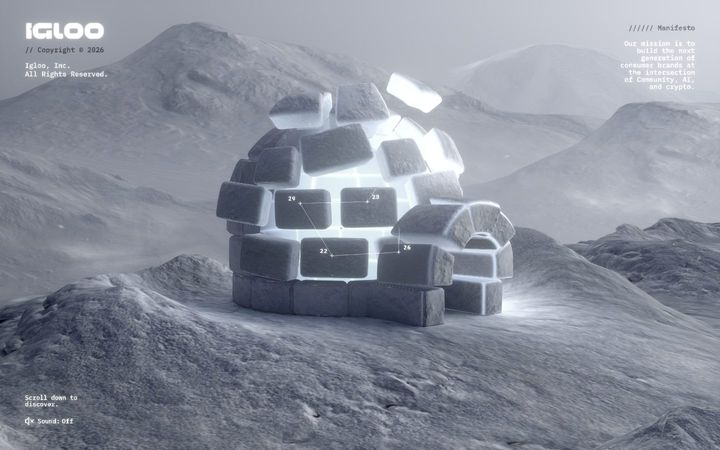
Igloo Inc
얼음 블록으로 지은 이글루 하나가 눈 덮인 산 위에 크게 서서 첫 화면을 꽉 채우는 입체 장면(헤드리스 캡처로 확인). 대표님이 #1207에서 고른 레퍼런스입니다.
지난 레퍼런스 보드 12개(373곳)와 그 뒤 시안에 대한 대표님 댓글을 맞춰 보고, 장인의상패 홈페이지로 지금 규칙을 직접 돌려 봤습니다. 찾는 방법(주소 확인·수상 확인·녹화)은 문제가 없었고, 무엇을 고르게 하는 규칙 네 개가 문제였습니다.
바꾸면 어떻게 되나
지금 규칙


시안은 이 네 곳에서 장면·색·구성을 조금씩 가져와 붙입니다. 어느 한 곳도 끝까지 따라가지 않습니다.
→ 짜깁기. 여러 곳을 섞어 만든 박물관 시안이 "C급"이었습니다.
바꾸면


시계 자리에 장인의상패 인기 상품인 블랙 크리스탈 상패(BK 0146)를 3D로 세우고, 뒤에 'BK 0146'을 크게 깝니다. 손으로 돌려 보고 크리스탈·자개·순금으로 바꿔 봅니다. 두 번째 화면만 글자를 새기는 손 접사입니다.
크리스탈 상패는 코드로 만듭니다. 고객이 새로 줄 것은 매장에서 폰으로 찍은 각인 장면 10초 하나입니다.
→ 한샘·오늘의집·크몽을 하나씩 재서 따라 했을 때("시안 1~3 다 너무 좋고")와 같은 방식입니다.
| 대표님이 받는 것 | 지금 | 바꾸면 |
|---|---|---|
| 레퍼런스 보드 | 30곳·7묶음, 국내 6곳 이상 | 12~20곳·3~5묶음, 수준이 되는 곳만 |
| 고르는 기준 | 같은 업종 수상작부터 | 그 회사 재료(장인의상패라면 새기기·크리스탈)로 '와'를 만든 최고 수준부터, 업종 무관 |
| 추천안 | 4곳 섞기 | 원본 1곳 + 빌려 올 장면 1개 |
| 카드 한 장 | 와 포인트 | + 이 와는 무엇으로 만들었나 / 우리는 무엇으로 만드나 |
| 시안 3개 | 여러 곳 조각을 붙임, 그림 없이 배치만 남기도 함 | 안마다 원본 1곳을 재서 충실히, 와의 재료(3D·AI 그림·고객 촬영)를 먼저 만들어 넣음 |
| 시키는 법 | 그대로 — 「고퀄리티 홈페이지 제작자」 하나 걸고 "OOO 메인 시안 3개 뽑아줘" | |
줄어드는 것: 국내 사례가 줄 수 있습니다(시험에서 0곳). 고객에게 보여 줄 국내 사례가 필요하면 '수준이 되는 국내 1~2곳'만 찾도록 넣습니다. 보장하는 건 아닙니다 — 따라 할 원본의 수준(천장)을 올리는 것이고, 마지막 품질은 만드는 단계에서 갈립니다.
직접 돌려 봄 ① 지금 규칙(레퍼런스 탐색가)
라이브러리 원문만 준 새 작업자에게 장인의상패(janginart.co.kr) 리뉴얼 레퍼런스를 찾게 했습니다(녹화·발행은 생략).

얼음 블록으로 지은 이글루 하나가 눈 덮인 산 위에 크게 서서 첫 화면을 꽉 채우는 입체 장면(헤드리스 캡처로 확인). 대표님이 #1207에서 고른 레퍼런스입니다.
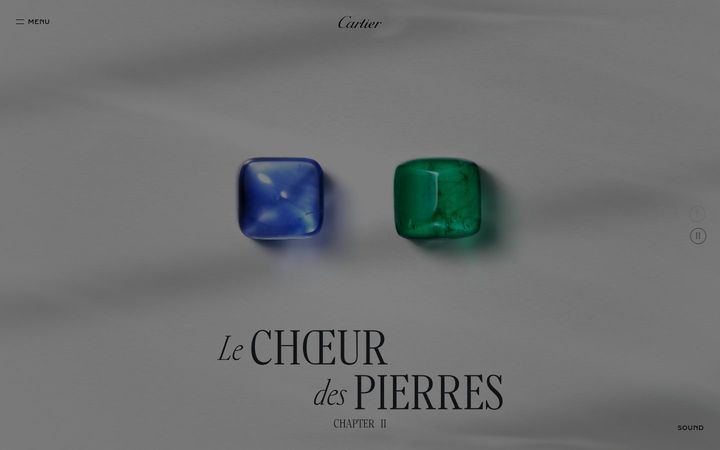
보석 원석이 영감 → 장인 작업 → 구아슈 도안 순서로 펼쳐지는 몰입형 여정(수상 페이지 설명). 첫 화면에 '아무 곳이나 눌러 소리 켜기' 안내가 있습니다(캡처).
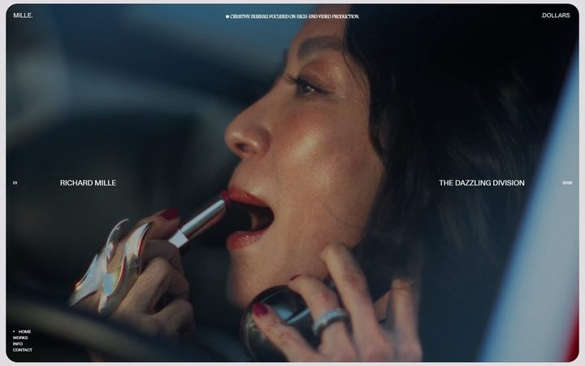
크리스탈 병을 아주 가까이 찍은 장면이 화면을 꽉 채우고 작품 이름은 양옆에 작게만 붙어 있습니다(캡처). 고급 영상 제작사라 작품 영상을 크게 보여 주는 구성입니다(수상 페이지 업종 설명).
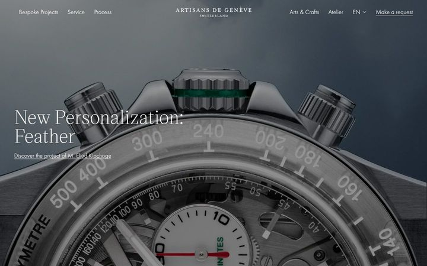
스위스 시계 공방의 정밀함과 장인 작업을 화면으로 옮긴 사이트(수상 페이지 설명). 들어가기 전에 공방의 안내문이 먼저 뜨는 구성입니다(캡처).
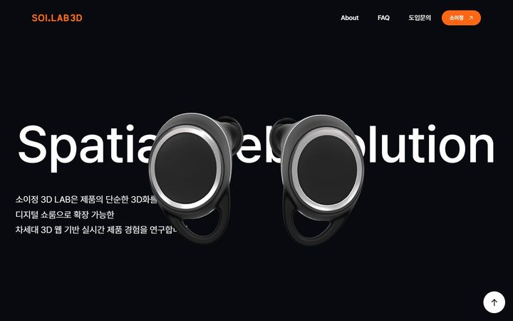
검은 바탕의 큰 글자 사이로 3D 제품이 떠서 돌아가고(캡처), 360도 회전·재질 바꾸기·AR이 되는 3D 카탈로그를 만드는 곳입니다(사이트 설명문).
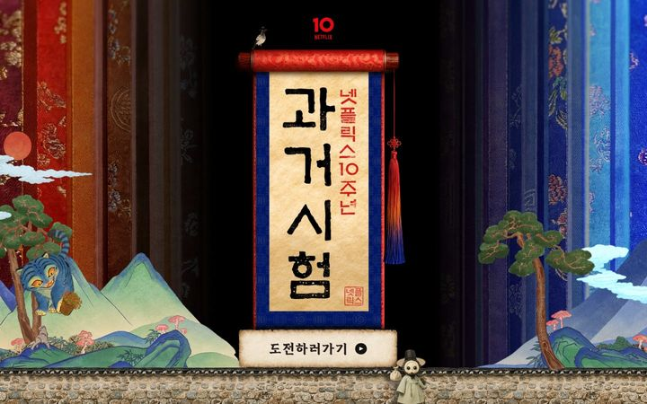
민화풍 두루마리에 '과거시험'이라고 크게 쓰고, 문제를 풀어 가는 퀴즈형 기념 사이트입니다(캡처).
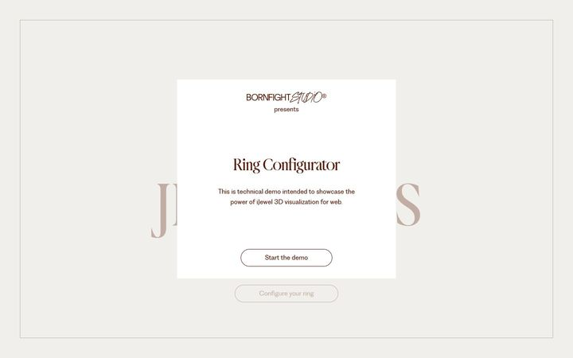
금 색(옐로·로즈·화이트)과 다이아몬드를 고르면 3D 반지가 실시간으로 바뀝니다(사이트 설명문), 첫 화면 3D 반지(캡처).
직접 돌려 봄 ② 같은 회사, 규칙 네 개만 바꿔서
바꾼 것: 수준 먼저(업종 무관)·같은 업종은 구조 참고로만 / 개수·국내 할당 없음 / 추천안은 주 레퍼런스 1곳 + 빌려 올 장치 1개 / 카드마다 '와의 재료와 우리가 만드는 법'.
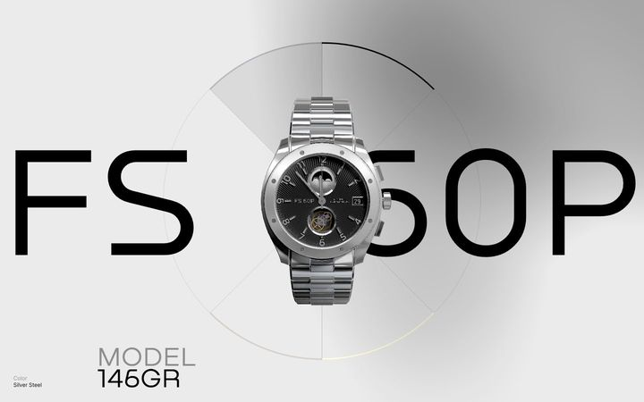
화면 한가운데 실시간 3D 시계가 떠 있고 그 뒤로 'FS 60P' 제품 번호가 화면을 가로지를 만큼 크게 깔린다. 꾹 누르면 시계를 둘러보고, 은색·검정·금색·로즈골드로 바꿔 본다.
와의 재료3D와 글자 배치에서 나온다. 우리 시안: 크리스탈 상패는 모양이 단순한 다면체라 코드(3D)로 직접 만들고 빛이 굴절되는 재질을 입힌다. 제품 번호는 고객 실제 번호를 그대로 쓴다.
보석 원석이 이야기를 이끌고, 영감·수작업·채색 원화(구아슈)를 장(章)으로 넘겨 본다(수상 페이지 설명). 첫 화면은 큰 세리프 글자 'Le Chœur des Pierres – Chapter II'와 장 번호, 소리 켜기.
와의 재료3D·영상과 글자 배치에서 나온다. 우리 시안: 크리스탈 원판은 코드(3D)로, 디자인 특허 받은 BK 0163 꽃 모양 단면을 장마다 하나씩 보여 주고, AI 그림은 배경의 빛·안개에만 쓴다.
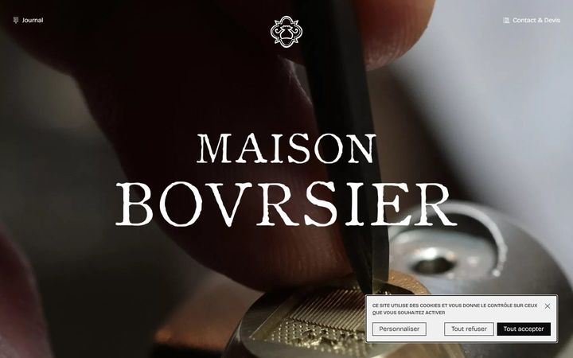
조각칼이 반지 표면을 파 들어가는 접사 장면이 첫 화면을 가득 채우고, 그 위에 'MAISON BOVRSIER' 큰 글자. 이어서 '당신의 이야기를 새기세요(Gravez votre histoire)'와 '문의·견적(Contact & Devis)'이 바로 나온다.
와의 재료촬영(접사)과 글자 배치에서 나온다. 우리 시안: 매장 작업대에서 각인하는 장면을 폰 접사로 10초 촬영한 고객 실제 영상을 쓴다(AI 그림 아님).
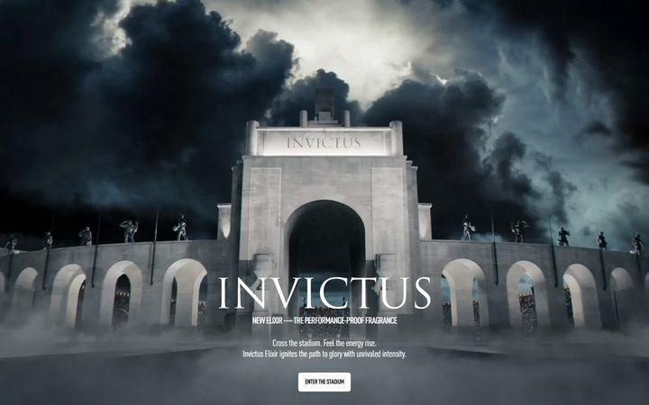
먹구름 아래 경기장 정문이 입체로 서 있고 'ENTER THE STADIUM'을 누르면 경기장 안으로 들어간다. 수상 페이지 설명은 '챔피언을 위한 금빛 트로피'.
와의 재료3D 장면·영상과 입장 버튼에서 나온다. 우리 시안: 시상대·조명은 코드(3D)와 AI 배경으로, 트로피는 고객 실제 제품 사진을 오려 올린다.
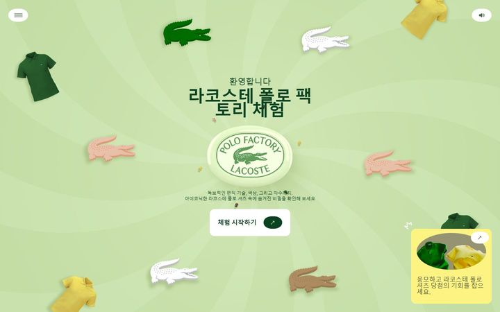
밝은 초록 화면에 폴로셔츠와 악어가 떠다니고, '체험 시작하기'를 누르면 편직 → 염색 → 자수 공정을 직접 해 보는 놀이형 공장 견학.
와의 재료코드 동작(단계형 놀이)과 밝은 색에서 나온다. 우리 시안: 재질 고르기 → 문구 넣기 → 포장 단계를 코드로, 그림은 고객 제품 사진을 오려 쓴다.
직접 돌려 봄 ③ 「고퀄리티 홈페이지 제작자」의 레퍼런스 단계
오늘 아침 넣은 문장 '같은 업종·같은 방법의 수상작 2~3개를 실제로 열어 잰다'를 그대로 따르게 했습니다. 예술 처방은 1안 동판 긁기·2안 크리스탈 프리즘·3안 자개 스테인드글라스로 잘 나왔습니다.
가져올 것같은 업종(손으로 새기는 맞춤 공방)의 첫 화면 결: 매크로 실사 위 가는 세리프 큰 제목 + 의뢰 버튼('Make a request' = 우리 '견적상담'), 12칸 그리드·좌우 48px 여백을 빌린다. 이 사이트엔 손 반응이 없으므로 와우(긁기)는 우리 처방이 채운다.
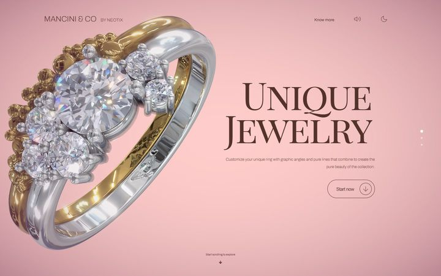
가져올 것금·백금 실시간 반사 렌더 수준 = 금판 V홈이 빛을 받는 장면의 재질 기준. 첫 화면 구성(왼쪽 큰 실물 한 개 / 오른쪽 124px 세리프 제목 + 원형 버튼)도 참고.
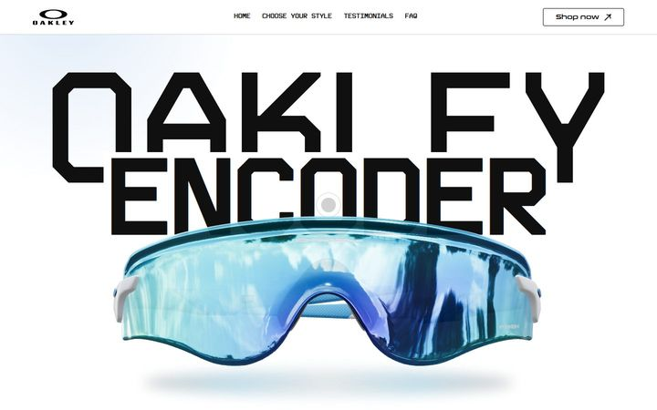
가져올 것같은 방법(3D 제품 하나를 스크롤 장면마다 돌려 가며 설명) + 화면 폭 가득한 제품명 글자 뒤·앞으로 실물이 지나가는 첫 화면. 7곳 중 유일하게 마우스에 반응(화면 2.6% 변화) — 돌려 보기 손잡이 표시 방식 참고.
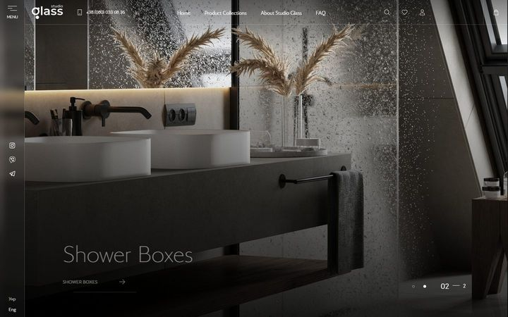
가져올 것같은 물성(유리) 제조사 쇼핑몰의 결: 전체화면 실사 슬라이드 + 72px 가는 제목 + 제품군 바로가기 + 왼쪽 세로 메뉴. 3D 장면 아래 '카테고리·장바구니' 쇼핑 동선 참고.
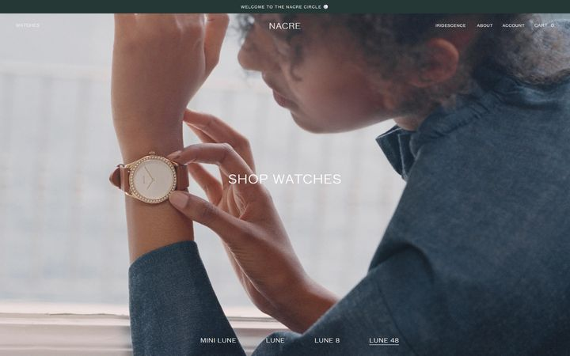
가져올 것같은 물성(자개)을 파는 쇼핑몰: 전체화면 착용 실사 + 가운데 짧은 한 줄 + 아래 제품 라인 탭(우리: 명패·상패·트로피). 메뉴 이름에 물성('IRIDESCENCE')을 그대로 쓰는 방식.
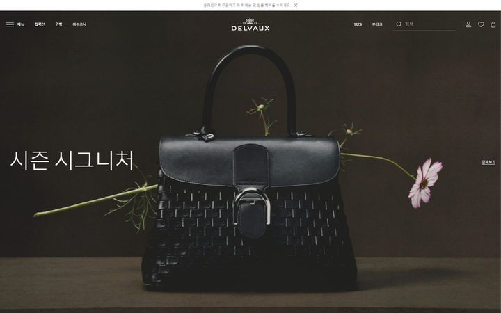
가져올 것같은 방법(장인 메종 쇼핑몰의 실사 히어로 + 절제된 글자): 어두운 배경 실물 사진 한 장 + 60px 세리프 작은 대문자 제목 + 'CHRONICLES'(이야기)·'1829'(연혁) 메뉴 — 우리 '평생 조각한 장인' 이야기를 메뉴로 올리는 방식.
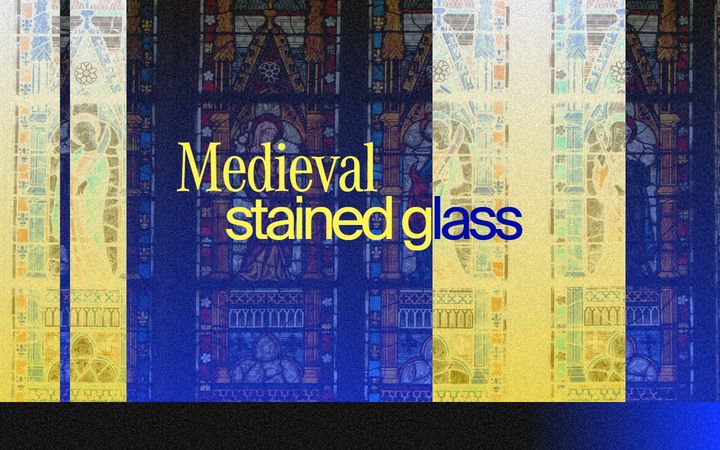
가져올 것처방과 같은 재료 원리(조각난 색 유리가 빛을 받음) + 한 공예를 스크롤로 풀어 가는 이야기 구성. 큰 제목 두 줄을 어긋나게 놓고 뒤 색 띠에 따라 글자색이 갈리는 처리.
오늘 아침 실제로 벌어진 일
| 판 | 어떻게 골랐나 | 대표님 반응 |
|---|---|---|
| 1판 (10/28) | 지금 집행 중인 AI 교육 광고 기준 → 작은 교육 회사의 저예산 소재가 대부분 | "왜 이렇게 다 허접한거밖에 없어?" (09:58) |
| 2판 (10:34) | 제작 규모 기준 → 슈퍼볼·배우·현장 촬영 광고 28편 | "claude code로 영상 만들계획이라, 실사 영상은 곤란한데" (10:46) |
| 3판 (11:12) | 코드로 만들 수 있는 광고만 + 카드마다 '코드로 만들기 쉬움/보통' | — |
1판은 '같은 업종'에 묶여 천장이 낮았고, 2판은 '와의 재료(배우·촬영)'를 우리가 못 만드는 곳을 골랐습니다. 아래 네 가지 중 ①과 ④가 그대로 일어난 사례입니다.
지난 보드 ① 같은 업종에 묶였을 때
보드 30곳 중 27곳이 정부·공공기관 사이트(나머지 3곳도 연구단지·창업 캠퍼스)였고, 수상한 곳은 5곳뿐이었습니다. 1안·2안은 이 중 싱가포르·뉴질랜드 정부 사이트를 재서 충실히 따랐고, 대표님 평가는 "50만원짜리 적당히 레이아웃만 잘 잡은 느낌"이었습니다. 따라 한 원본의 급이 시안의 천장이 됩니다.
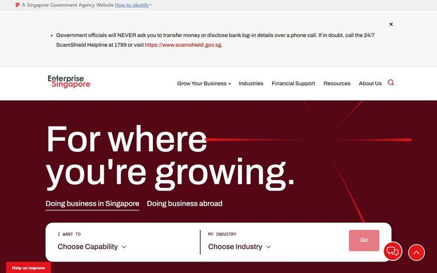
시안 1안이 실측해 따른 곳
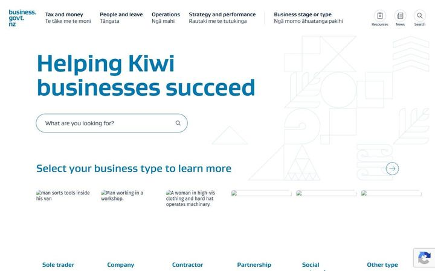
시안 2안이 실측해 따른 곳
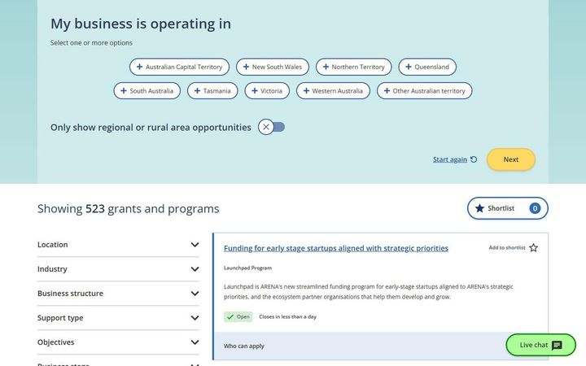
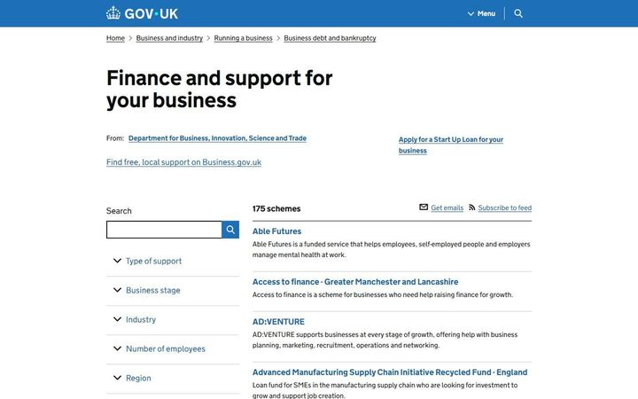
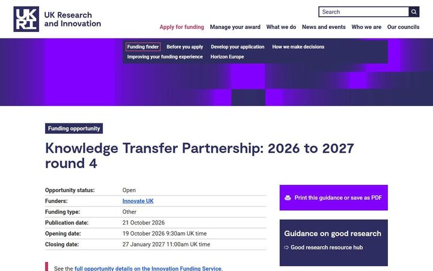
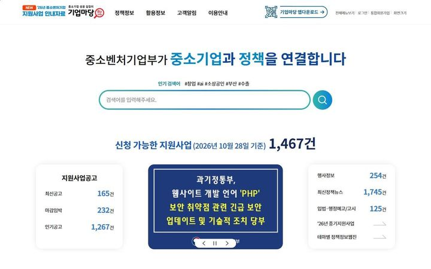
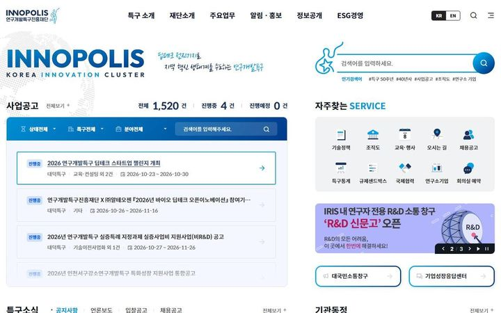
지난 보드 ② 와의 재료를 안 적었을 때
7곳 모두 '와'가 그림이나 3D에서 나옵니다. 카드에는 움직임 설명만 있고 그 재료가 무엇인지는 없었습니다. 시안은 그림 없이 배치와 움직임만 옮겨 "디자인 자체가 너무 저급"이 됐습니다.
와의 재료 = 1928년 원작 만화 그림과 필름 질감
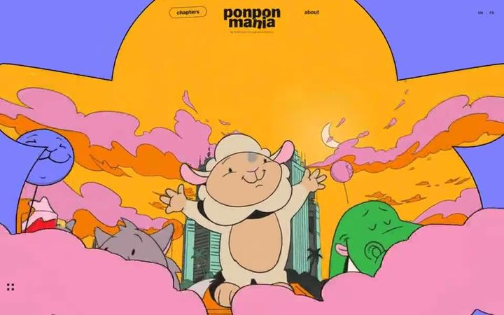
와의 재료 = 따로 그린 그림 부품 248장 + 포즈 그림 44장(10/29 실측)
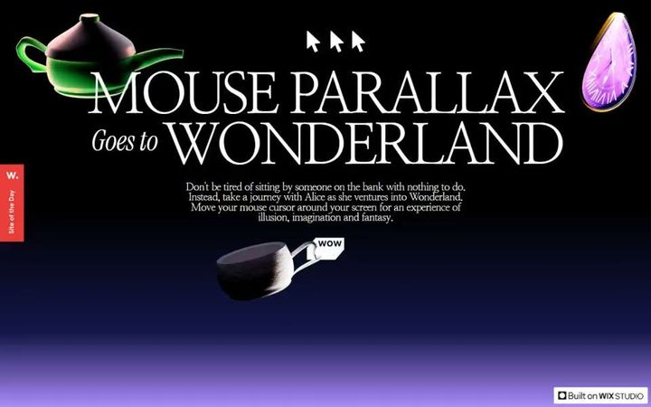
와의 재료 = 층마다 따로 그린 그림 조각
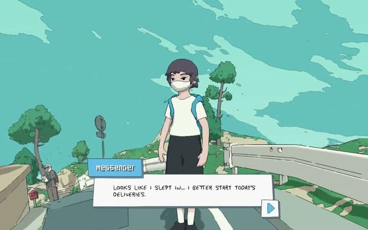
와의 재료 = 만화 그림체로 만든 3D 마을과 캐릭터
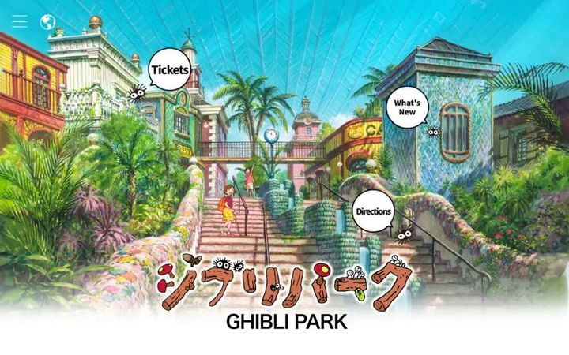
와의 재료 = 지브리 일러스트와 그림 지도
와의 재료 = 3D 장식과 3D 공원 그림
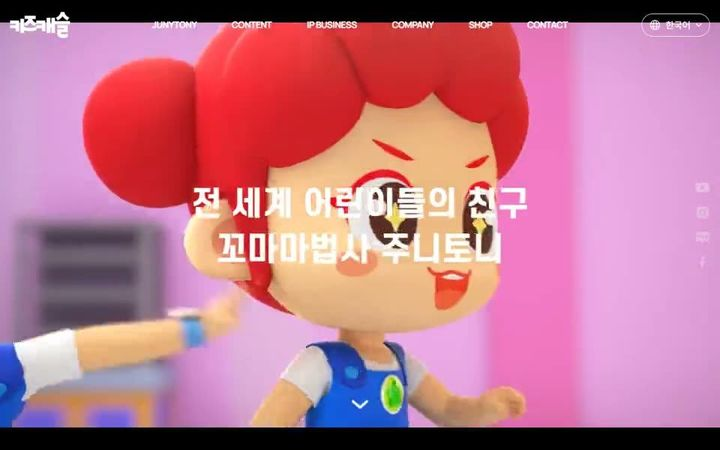
와의 재료 = 3D 애니메이션 캐릭터
기준
고객 업종과 상관없는 곳들입니다. 공통점은 첫 화면을 큰 장면 하나(실사 영상·3D·큰 글자)가 채운다는 것. 레퍼런스의 급은 이 정도여야 합니다.
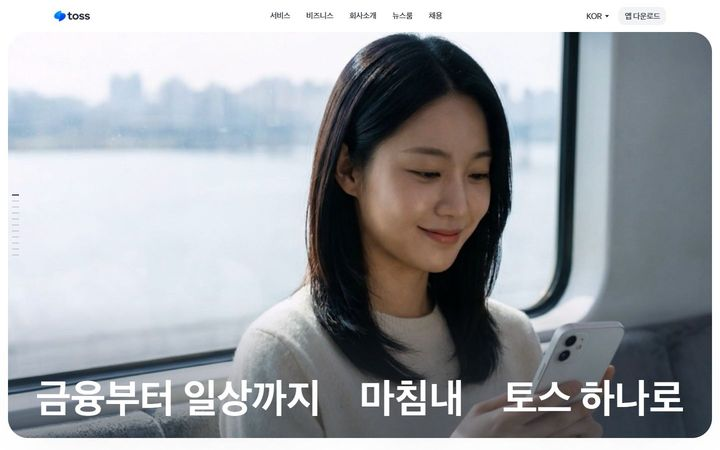
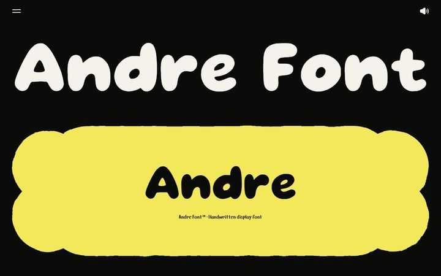
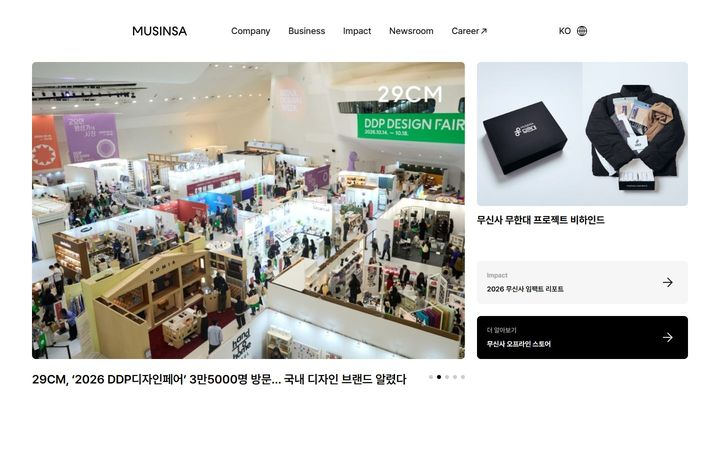
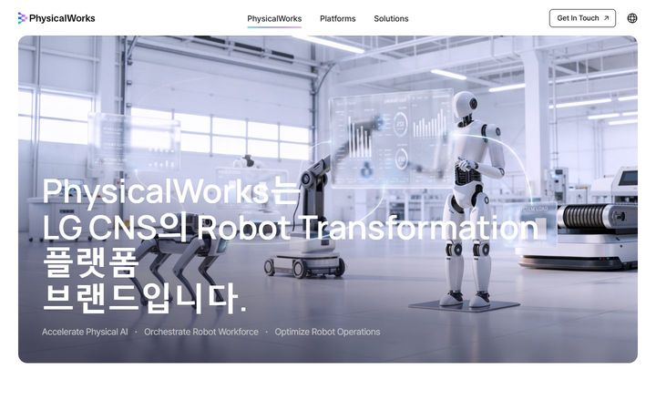
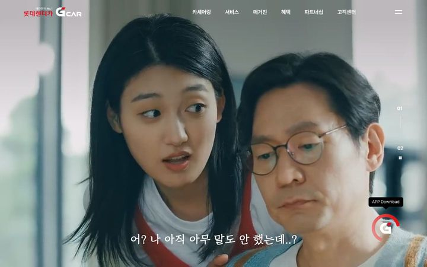
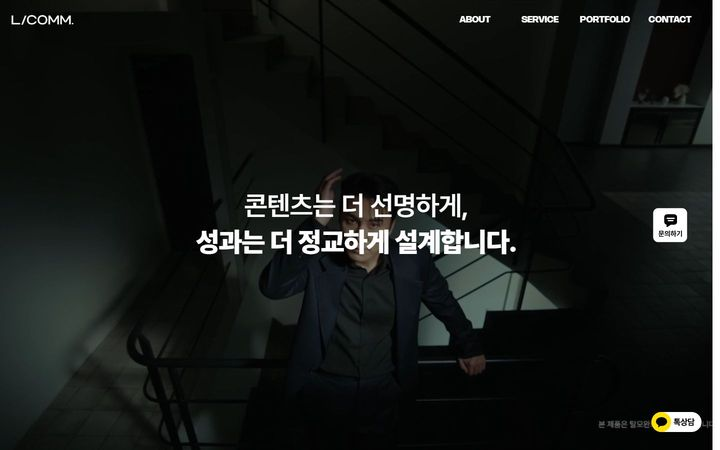
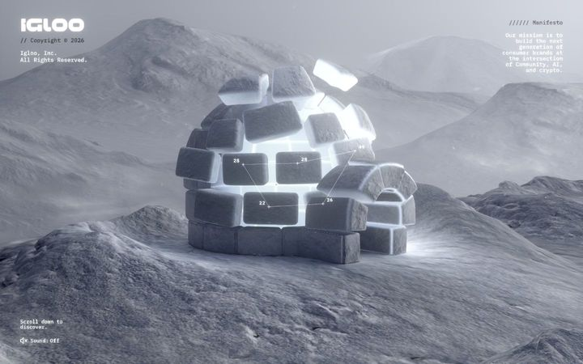
지난 보드 12개를 세어 보니
| 무엇 | 숫자 | 그 뒤 |
|---|---|---|
| 보드 크기 | 평균 31곳 (12개 보드 373곳) | 시안이 실제로 따른 곳은 안마다 1~4곳 |
| 국내 할당 | 9개 보드가 국내 묶음 6~7곳으로 고정(61곳). 이 중 '먼저 보세요'로 뽑힌 비율 15% (전체는 24%) | 대표님은 지디웹 후보 26곳 중 4곳만 채택(15%) |
| 대표님 등록 사이트 | 이글루 3개 보드(영상제작사·AI 챌린지·그래픽 학원), LDS 2개, LG CNS 2개 보드에 카드로 들어감 | 고객이 달라도 같은 결이 반복 |
| 추천 조합 | 보드 11개의 추천안 33개가 전부 4~5곳 섞기 | 섞어 만든 박물관 시안 "이런 C급은 못써" |
| 칭찬받은 시안 | 시안 하나에 레퍼런스 하나(한샘·오늘의집·크몽), 또는 역할을 나눈 두 곳(구성=바이브코딩PT, 배치=에이펠) | "시안 1~3 다 너무 좋고" · "2안으로 채택" |
결정 필요
| 어디 | 지금 | 바꿀 것 |
|---|---|---|
| 레퍼런스 탐색가 · 탐색 | ① 같은 업종 해외 수상작 … ④ 국내 수상작과 같은 지역 동종업체 | 수준 먼저(업종 무관, 그 회사 재료와 같은 원리) · 같은 업종은 메뉴·구조 참고로만 |
| 레퍼런스 탐색가 · 개수·취향 | 30곳 안팎 · 6~7묶음 · 국내 6곳 이상 · 대표 취향 조회 | 할당 없음(12~20곳) · 대표님 등록 사이트는 '급'의 기준으로만 쓰고 카드로 끼워 넣지 않음 |
| 레퍼런스 탐색가 · 추천안 | 안마다 3~4곳 조합 | 안마다 주 레퍼런스 1곳 + 빌려 올 장치 1개 |
| 레퍼런스 탐색가 · 카드 | 와 포인트(움직임 설명) | + 와의 재료와 우리가 만드는 법 · 못 만드는 재료(배우·현장 촬영)가 핵심이면 '먼저 보세요'에서 뺌 |
| 레퍼런스 탐색가 · 확인 | 주소를 curl로 200 확인 | 크롬처럼 열어 확인(명품 브랜드 사이트는 기본 curl을 막음) |
| 고퀄리티 홈페이지 제작자 · 3) 레퍼런스 | 같은 업종·같은 방법의 수상작 2~3개 | 업종 무관, 시안마다 주 레퍼런스 1곳 · 손맛 레퍼런스는 수상 무관(Codrops·개발자 영상) |
안 바꾸는 것: 주소·수상 날짜 확인, 녹화 영상 카드, '○○라면' 한 줄, 같은 지역 동종업체 비교(시험에서 옆 가게가 이미 'AI 문구 생성기'를 쓰는 걸 찾아냄), 「디자인 잘 베끼는 디자이너」의 실측·맞추기(좋은 원본을 고르면 그대로 무기). 관문·자동 심사는 넣지 않습니다.